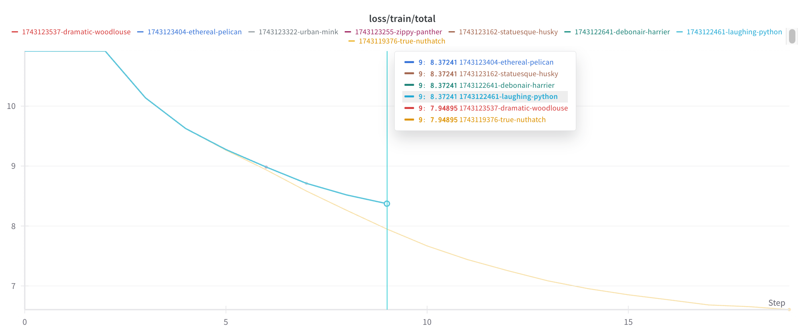
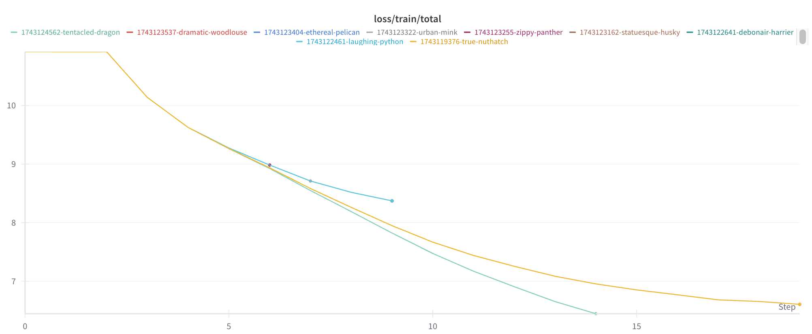
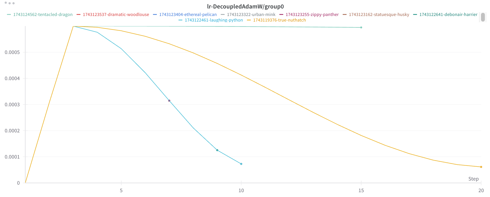

The Puzzle
Today I encountered a puzzling phenomenon: my model’s loss curve appeared to be bimodal. I was working to eliminate sources of randomness in order to reproduce another interesting finding, and I saw that the loss usually followed one curve, but sometimes followed a second curve, and always followed one of the two:

The Solution
I had decided to move on when a third curve appeared:

I then realized that the difference between the two initial sets of runs was coming from their max duration.
Why would a run’s max duration affect the loss curve at intermediate stages of training? Because the learning rate was scheduled to decay over the course of the run after an initial warmup. When the run is longer, it decays more slowly:

This was my LLM-Foundry learning rate scheduler configuration:
scheduler:
name: cosine_with_warmup
t_warmup: 200000tok
alpha_f: 0.1Why It Matters
It is important to realize when the learning rate depends on the run max duration for at least two reasons:
- Reproducibility requires leaving
max_durationfixed even for results early in training. - The optimal learning rate schedule hyperparameters will depend on
max_duration.
How to Deal with the Interaction Between Learning Rate and Max Duration
There are two ways to deal with this interaction between learning rate and max duration:
- Eliminate it, by using a constant learning rate or a schedule that is independent of
max_duration(e.g. a cyclic schedule). - Account for it, for instance by settling on a
max_durationfirst and then tuning learning rate schedule hyperparameters.
My understanding is that cosine decay is commonly used in LLM training, so it is important to be aware that changing the max duration under this approach will affect the entire training process.